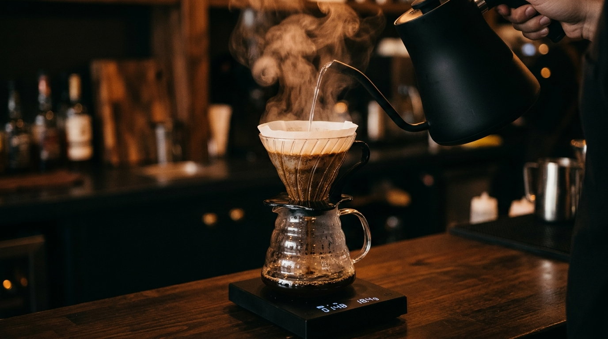
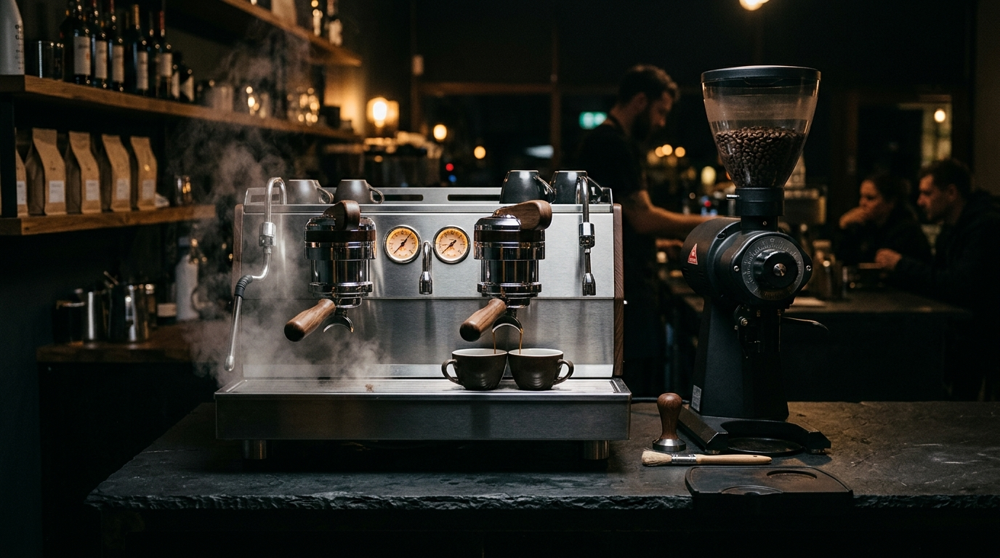
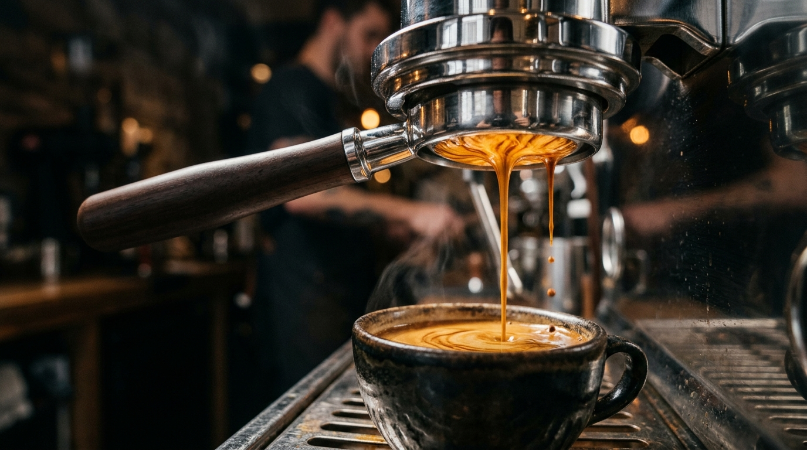
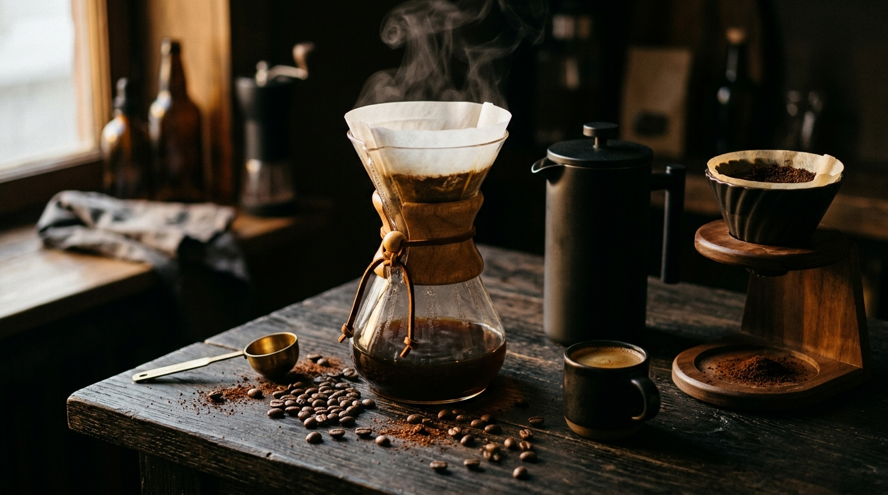

Filtro Cónico
Hario V60
Vertido en espiral por fases con claridad sensorial brillante.
Ratio 1:16.715 g3:30 min
Calculá proporciones en gramos, escalá cada vertido automáticamente y seguí los tiempos con pantalla activa en la mesada.


Vertido en espiral por fases con claridad sensorial brillante.

Cálculo por rendimiento en taza: Ristretto, Normale y Lungo.

Triple capa de papel para jarras limpias y notas florales.
Cuerpo equilibrado y extracción constante para todos los días.
Taza densa y dulce en dos minutos, estándar o invertida.
Textura untuosa sin filtros de papel y notas acarameladas.
Ajustá intensidad o dosis; cada pulso se recalcula con exactitud de balanza.
Verté 30 g en espiral sobre la cama seca y agitá suavemente la jarra.
Perfiles sensoriales reales por altitud, proceso y método recomendado.
Placeholder estructural para el anillo interactivo de descriptores y ajuste por método (Change C-09).